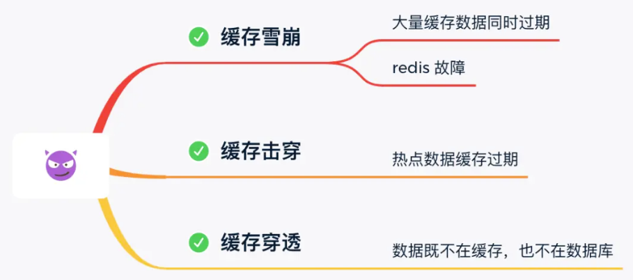
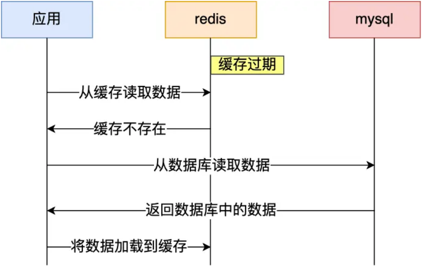
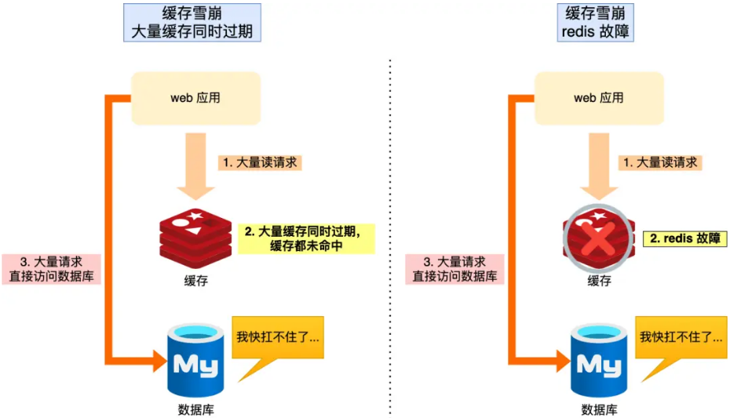
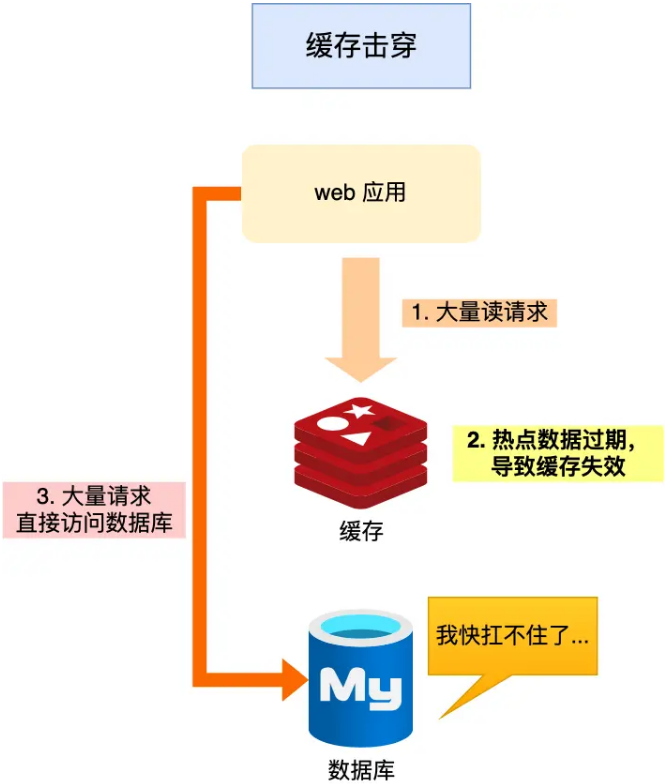
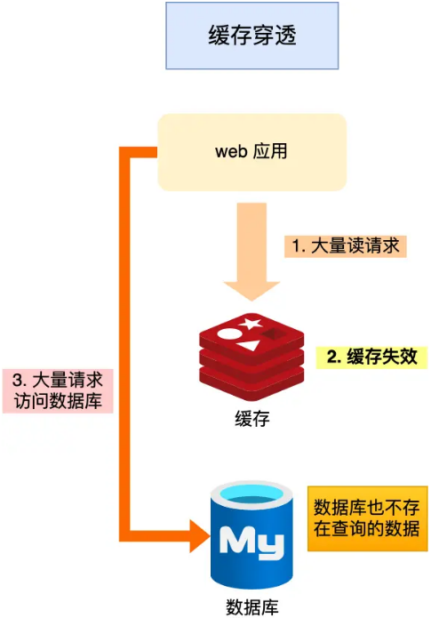
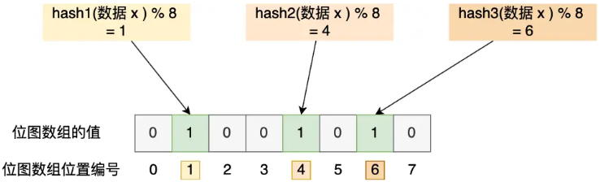

首页 > 编程笔记
Redis缓存雪崩、缓存击穿和缓存穿透是怎么回事？
用户的数据一般都是存储于数据库，数据库的数据是落在磁盘上的，磁盘的读写速度可以说是计算机里最慢的硬件了。当用户的请求，都访问数据库的话，请求数量一上来，数据库很容易就奔溃的了，所以为了避免用户直接访问数据库，会用 Redis 作为缓存层。
因为 Redis 是内存数据库，我们可以将数据库的数据缓存在 Redis 里，相当于数据缓存在内存，内存的读写速度比硬盘快好几个数量级，这样大大提高了系统性能。
既然引入了缓存层，那么就会有缓存异常的三个问题，分别是缓存雪崩、缓存击穿、缓存穿透。
这三个问题也是面试中很常考察的问题，我们不光要清楚地知道它们是怎么发生，还需要知道如何解决它们。
那么，当大量缓存数据在同一时间过期（失效）或者 Redis 故障宕机时，如果此时有大量的用户请求，都无法在 Redis 中处理，于是全部请求都直接访问数据库，从而导致数据库的压力骤增，严重的会造成数据库宕机，从而形成一系列连锁反应，造成整个系统崩溃，这就是缓存雪崩的问题。
可以看到，发生缓存雪崩有两个原因：
不同的诱因，应对的策略也会不同。
实现互斥锁的时候，最好设置超时时间，不然第一个请求拿到了锁，然后这个请求发生了某种意外而一直阻塞，一直不释放锁，这时其他请求也一直拿不到锁，整个系统就会出现无响应的现象。
事实上，缓存数据不设置有效期，并不是意味着数据一直能在内存里，因为当系统内存紧张的时候，有些缓存数据会被“淘汰”，而在缓存被“淘汰”到下一次后台定时更新缓存的这段时间内，业务线程读取缓存失败就返回空值，业务的视角就以为是数据丢失了。
解决上面的问题的方式有两种。
【第一种方式】后台线程不仅负责定时更新缓存，而且也负责频繁地检测缓存是否有效，检测到缓存失效了，原因可能是系统紧张而被淘汰的，于是就要马上从数据库读取数据，并更新到缓存。
这种方式的检测时间间隔不能太长，太长也导致用户获取的数据是一个空值而不是真正的数据，所以检测的间隔最好是毫秒级的，但是总归是有个间隔时间，用户体验一般。
【第二种方式】在业务线程发现缓存数据失效后（缓存数据被淘汰），通过消息队列发送一条消息通知后台线程更新缓存，后台线程收到消息后，在更新缓存前可以判断缓存是否存在：
这种方式相比第一种方式缓存的更新会更及时，用户体验也比较好。
在业务刚上线的时候，我们最好提前把数据缓起来，而不是等待用户访问才来触发缓存构建，这就是所谓的缓存预热，后台更新缓存的机制刚好也适合干这个事情。
服务熔断机制是保护数据库的正常允许，但是暂停了业务应用访问缓存服系统，全部业务都无法正常工作
为了减少对业务的影响，我们可以启用请求限流机制，只将少部分请求发送到数据库进行处理，再多的请求就在入口直接拒绝服务，等到 Redis 恢复正常并把缓存预热完后，再解除请求限流的机制。
如果 Redis 缓存的主节点故障宕机，从节点可以切换成为主节点，继续提供缓存服务，避免了由于 Redis 故障宕机而导致的缓存雪崩问题。
如果缓存中的某个热点数据过期了，此时大量的请求访问了该热点数据，就无法从缓存中读取，直接访问数据库，数据库很容易就被高并发的请求冲垮，这就是缓存击穿的问题。
可以发现缓存击穿跟缓存雪崩很相似，你可以认为缓存击穿是缓存雪崩的一个子集。
应对缓存击穿可以采取前面说到两种方案：
当用户访问的数据，既不在缓存中，也不在数据库中，导致请求在访问缓存时，发现缓存缺失，再去访问数据库时，发现数据库中也没有要访问的数据，没办法构建缓存数据，来服务后续的请求。那么当有大量这样的请求到来时，数据库的压力骤增，这就是缓存穿透的问题。
缓存穿透的发生一般有这两种情况：
应对缓存穿透的方案，常见的方案有三种：
即使发生了缓存穿透，大量请求只会查询 Redis 和布隆过滤器，而不会查询数据库，保证了数据库能正常运行，Redis 自身也是支持布隆过滤器的。
那问题来了，布隆过滤器是如何工作的呢？接下来，我介绍下。
布隆过滤器由「初始值都为 0 的位图数组」和「 N 个哈希函数」两部分组成。当我们在写入数据库数据时，在布隆过滤器里做个标记，这样下次查询数据是否在数据库时，只需要查询布隆过滤器，如果查询到数据没有被标记，说明不在数据库中。
布隆过滤器会通过 3 个操作完成标记：
举个例子，假设有一个位图数组长度为 8，哈希函数 3 个的布隆过滤器。
在数据库写入数据 x 后，把数据 x 标记在布隆过滤器时，数据 x 会被 3 个哈希函数分别计算出 3 个哈希值，然后在对这 3 个哈希值对 8 取模，假设取模的结果为 1、4、6，然后把位图数组的第 1、4、6 位置的值设置为 1。
当应用要查询数据 x 是否数据库时，通过布隆过滤器只要查到位图数组的第 1、4、6 位置的值是否全为 1，只要有一个为 0，就认为数据 x 不在数据库中。
布隆过滤器由于是基于哈希函数实现查找的，高效查找的同时存在哈希冲突的可能性，比如数据 x 和数据 y 可能都落在第 1、4、6 位置，而事实上，可能数据库中并不存在数据 y，存在误判的情况。
所以，查询布隆过滤器说数据存在，并不一定证明数据库中存在这个数据，但是查询到数据不存在，数据库中一定就不存在这个数据。
其中，缓存雪崩和缓存击穿主要原因是数据不在缓存中，而导致大量请求访问了数据库，数据库压力骤增，容易引发一系列连锁反应，导致系统奔溃。不过，一旦数据被重新加载回缓存，应用又可以从缓存快速读取数据，不再继续访问数据库，数据库的压力也会瞬间降下来。因此，缓存雪崩和缓存击穿应对的方案比较类似。
而缓存穿透主要原因是数据既不在缓存也不在数据库中。因此，缓存穿透与缓存雪崩、击穿应对的方案不太一样。
我这里整理了表格，你可以从下面这张表格很好的知道缓存雪崩、击穿和穿透的区别以及应对方案。
因为 Redis 是内存数据库，我们可以将数据库的数据缓存在 Redis 里，相当于数据缓存在内存，内存的读写速度比硬盘快好几个数量级，这样大大提高了系统性能。
既然引入了缓存层，那么就会有缓存异常的三个问题，分别是缓存雪崩、缓存击穿、缓存穿透。
这三个问题也是面试中很常考察的问题，我们不光要清楚地知道它们是怎么发生，还需要知道如何解决它们。

1. Redis缓存雪崩
通常我们为了保证缓存中的数据与数据库中的数据一致性，会给 Redis 里的数据设置过期时间，当缓存数据过期后，用户访问的数据如果不在缓存里，业务系统需要重新生成缓存，因此就会访问数据库，并将数据更新到 Redis 里，这样后续请求都可以直接命中缓存。

那么，当大量缓存数据在同一时间过期（失效）或者 Redis 故障宕机时，如果此时有大量的用户请求，都无法在 Redis 中处理，于是全部请求都直接访问数据库，从而导致数据库的压力骤增，严重的会造成数据库宕机，从而形成一系列连锁反应，造成整个系统崩溃，这就是缓存雪崩的问题。

可以看到，发生缓存雪崩有两个原因：
- 大量数据同时过期
- Redis 故障宕机
不同的诱因，应对的策略也会不同。
1) 大量数据同时过期
针对大量数据同时过期而引发的缓存雪崩问题，常见的应对方法有下面这几种：- 均匀设置过期时间
- 互斥锁
- 双 key 策略
- 后台更新缓存
① 均匀设置过期时间
如果要给缓存数据设置过期时间，应该避免将大量的数据设置成同一个过期时间。我们可以在对缓存数据设置过期时间时，给这些数据的过期时间加上一个随机数，这样就保证数据不会在同一时间过期。② 互斥锁
当业务线程在处理用户请求时，如果发现访问的数据不在 Redis 里，就加个互斥锁，保证同一时间内只有一个请求来构建缓存（从数据库读取数据，再将数据更新到 Redis 里），当缓存构建完成后，再释放锁。未能获取互斥锁的请求，要么等待锁释放后重新读取缓存，要么就返回空值或者默认值。实现互斥锁的时候，最好设置超时时间，不然第一个请求拿到了锁，然后这个请求发生了某种意外而一直阻塞，一直不释放锁，这时其他请求也一直拿不到锁，整个系统就会出现无响应的现象。
③ 后台更新缓存
业务线程不再负责更新缓存，缓存也不设置有效期，而是让缓存“永久有效”，并将更新缓存的工作交由后台线程定时更新。事实上，缓存数据不设置有效期，并不是意味着数据一直能在内存里，因为当系统内存紧张的时候，有些缓存数据会被“淘汰”，而在缓存被“淘汰”到下一次后台定时更新缓存的这段时间内，业务线程读取缓存失败就返回空值，业务的视角就以为是数据丢失了。
解决上面的问题的方式有两种。
【第一种方式】后台线程不仅负责定时更新缓存，而且也负责频繁地检测缓存是否有效，检测到缓存失效了，原因可能是系统紧张而被淘汰的，于是就要马上从数据库读取数据，并更新到缓存。
这种方式的检测时间间隔不能太长，太长也导致用户获取的数据是一个空值而不是真正的数据，所以检测的间隔最好是毫秒级的，但是总归是有个间隔时间，用户体验一般。
【第二种方式】在业务线程发现缓存数据失效后（缓存数据被淘汰），通过消息队列发送一条消息通知后台线程更新缓存，后台线程收到消息后，在更新缓存前可以判断缓存是否存在：
- 存在就不执行更新缓存操作；
- 不存在就读取数据库数据，并将数据加载到缓存。
这种方式相比第一种方式缓存的更新会更及时，用户体验也比较好。
在业务刚上线的时候，我们最好提前把数据缓起来，而不是等待用户访问才来触发缓存构建，这就是所谓的缓存预热，后台更新缓存的机制刚好也适合干这个事情。
2) Redis 故障宕机
针对 Redis 故障宕机而引发的缓存雪崩问题，常见的应对方法有下面这几种：- 服务熔断或请求限流机制
- 构建 Redis 缓存高可靠集群
① 服务熔断或请求限流机制
因为 Redis 故障宕机而导致缓存雪崩问题时，我们可以启动服务熔断机制，暂停业务应用对缓存服务的访问，直接返回错误，不用再继续访问数据库，从而降低对数据库的访问压力，保证数据库系统的正常运行，然后等到 Redis 恢复正常后，再允许业务应用访问缓存服务。服务熔断机制是保护数据库的正常允许，但是暂停了业务应用访问缓存服系统，全部业务都无法正常工作
为了减少对业务的影响，我们可以启用请求限流机制，只将少部分请求发送到数据库进行处理，再多的请求就在入口直接拒绝服务，等到 Redis 恢复正常并把缓存预热完后，再解除请求限流的机制。
② 构建 Redis 缓存高可靠集群
服务熔断或请求限流机制是缓存雪崩发生后的应对方案，我们最好通过主从节点的方式构建 Redis 缓存高可靠集群。如果 Redis 缓存的主节点故障宕机，从节点可以切换成为主节点，继续提供缓存服务，避免了由于 Redis 故障宕机而导致的缓存雪崩问题。
2. 缓存击穿
我们的业务通常会有几个数据会被频繁地访问，比如秒杀活动，这类被频地访问的数据被称为热点数据。如果缓存中的某个热点数据过期了，此时大量的请求访问了该热点数据，就无法从缓存中读取，直接访问数据库，数据库很容易就被高并发的请求冲垮，这就是缓存击穿的问题。

可以发现缓存击穿跟缓存雪崩很相似，你可以认为缓存击穿是缓存雪崩的一个子集。
应对缓存击穿可以采取前面说到两种方案：
- 互斥锁方案，保证同一时间只有一个业务线程更新缓存，未能获取互斥锁的请求，要么等待锁释放后重新读取缓存，要么就返回空值或者默认值。
- 不给热点数据设置过期时间，由后台异步更新缓存，或者在热点数据准备要过期前，提前通知后台线程更新缓存以及重新设置过期时间。
3. 缓存穿透
当发生缓存雪崩或击穿时，数据库中还是保存了应用要访问的数据，一旦缓存恢复相对应的数据，就可以减轻数据库的压力，而缓存穿透就不一样了。当用户访问的数据，既不在缓存中，也不在数据库中，导致请求在访问缓存时，发现缓存缺失，再去访问数据库时，发现数据库中也没有要访问的数据，没办法构建缓存数据，来服务后续的请求。那么当有大量这样的请求到来时，数据库的压力骤增，这就是缓存穿透的问题。

缓存穿透的发生一般有这两种情况：
- 业务误操作，缓存中的数据和数据库中的数据都被误删除了，所以导致缓存和数据库中都没有数据；
- 黑客恶意攻击，故意大量访问某些读取不存在数据的业务。
应对缓存穿透的方案，常见的方案有三种：
- 非法请求的限制；
- 缓存空值或者默认值；
- 使用布隆过滤器快速判断数据是否存在，避免通过查询数据库来判断数据是否存在。
1) 非法请求的限制
当有大量恶意请求访问不存在的数据的时候，也会发生缓存穿透，因此在 API 入口处我们要判断求请求参数是否合理，请求参数是否含有非法值、请求字段是否存在，如果判断出是恶意请求就直接返回错误，避免进一步访问缓存和数据库。2) 缓存空值或者默认值
当我们线上业务发现缓存穿透的现象时，可以针对查询的数据，在缓存中设置一个空值或者默认值，这样后续请求就可以从缓存中读取到空值或者默认值，返回给应用，而不会继续查询数据库。3) 使用布隆过滤器快速判断数据是否存在，避免通过查询数据库来判断数据是否存在
我们可以在写入数据库数据时，使用布隆过滤器做个标记，然后在用户请求到来时，业务线程确认缓存失效后，可以通过查询布隆过滤器快速判断数据是否存在，如果不存在，就不用通过查询数据库来判断数据是否存在。即使发生了缓存穿透，大量请求只会查询 Redis 和布隆过滤器，而不会查询数据库，保证了数据库能正常运行，Redis 自身也是支持布隆过滤器的。
那问题来了，布隆过滤器是如何工作的呢？接下来，我介绍下。
布隆过滤器由「初始值都为 0 的位图数组」和「 N 个哈希函数」两部分组成。当我们在写入数据库数据时，在布隆过滤器里做个标记，这样下次查询数据是否在数据库时，只需要查询布隆过滤器，如果查询到数据没有被标记，说明不在数据库中。
布隆过滤器会通过 3 个操作完成标记：
- 使用 N 个哈希函数分别对数据做哈希计算，得到 N 个哈希值；
- 将第一步得到的 N 个哈希值对位图数组的长度取模，得到每个哈希值在位图数组的对应位置。
- 将每个哈希值在位图数组的对应位置的值设置为 1。
举个例子，假设有一个位图数组长度为 8，哈希函数 3 个的布隆过滤器。

在数据库写入数据 x 后，把数据 x 标记在布隆过滤器时，数据 x 会被 3 个哈希函数分别计算出 3 个哈希值，然后在对这 3 个哈希值对 8 取模，假设取模的结果为 1、4、6，然后把位图数组的第 1、4、6 位置的值设置为 1。
当应用要查询数据 x 是否数据库时，通过布隆过滤器只要查到位图数组的第 1、4、6 位置的值是否全为 1，只要有一个为 0，就认为数据 x 不在数据库中。
布隆过滤器由于是基于哈希函数实现查找的，高效查找的同时存在哈希冲突的可能性，比如数据 x 和数据 y 可能都落在第 1、4、6 位置，而事实上，可能数据库中并不存在数据 y，存在误判的情况。
所以，查询布隆过滤器说数据存在，并不一定证明数据库中存在这个数据，但是查询到数据不存在，数据库中一定就不存在这个数据。
总结
缓存异常会面临的三个问题：缓存雪崩、击穿和穿透。其中，缓存雪崩和缓存击穿主要原因是数据不在缓存中，而导致大量请求访问了数据库，数据库压力骤增，容易引发一系列连锁反应，导致系统奔溃。不过，一旦数据被重新加载回缓存，应用又可以从缓存快速读取数据，不再继续访问数据库，数据库的压力也会瞬间降下来。因此，缓存雪崩和缓存击穿应对的方案比较类似。
而缓存穿透主要原因是数据既不在缓存也不在数据库中。因此，缓存穿透与缓存雪崩、击穿应对的方案不太一样。
我这里整理了表格，你可以从下面这张表格很好的知道缓存雪崩、击穿和穿透的区别以及应对方案。
| 缓存异常 | 产生原因 | 应对方案 |
|---|---|---|
| 缓存雪崩 | 大量数据同时过期 |
|
| Redis 故障宕机 |
|
|
| 缓存击穿 | 频繁访问的热点数据过期 |
|
| 缓存穿透 | 访问的数据既不在缓存，也不在数据库 |
非法请求的限制; 缓存空值或者默认值; 使用布隆过滤器快速判断数据是否存在。 |
关注公众号「站长严长生」，在手机上阅读所有教程，随时随地都能学习。内含一款搜索神器，免费下载全网书籍和视频。

微信扫码关注公众号